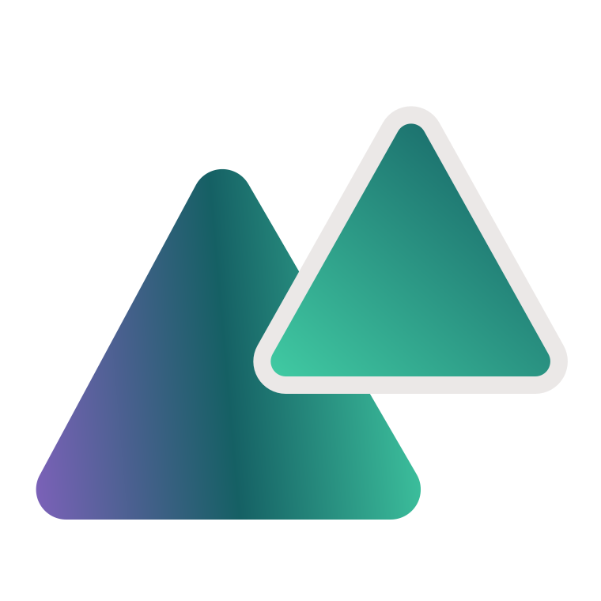

Start
Jak używać systemu.
Social media, slajdy i formularze tworzysz w Claude Design, a stronę WWW w Claude Code. Repozytorium służy tu tylko do odczytu: nowe projekty powstają w Claude i niczego w nim nie zmieniają.
Czego potrzebujesz
- Konto GitHub z dostępem do repozytorium
gorskip/ps-design-system. Wystarczy odczyt. - Płatny plan Claude. Systemy projektowe nie są dostępne w planie Free.
Social media, slajdy i formularze: Claude Design
Ustawiasz to raz.
- W Claude otwórz + > Design system > New design system i wybierz Using Claude.
- Wybierz Sync from GitHub i wskaż repozytorium
gorskip/ps-design-system. Jeśli Claude poprosi o połączenie z GitHubem, użyj konta z dostępem do repozytorium. - Gdy Claude zapyta, co przenieść, wklej prompt podany niżej.
- Otwórz Settings > Design systems i przy nowym systemie wybierz Set as default.
- Gdy repozytorium się zmieni, uruchom Sync from GitHub ponownie. Gotowe projekty aktualizuje się osobno, prosząc o to Claude.
Zbuduj system projektowy Przeskalowani z tego repozytorium. Przeczytaj foldery: tokens, base, components, patterns, social, slides/typy, forms, assets. Zasady z plików SKILL.md w folderach .claude/skills/ps-design-system, ps-social-post, ps-slides i ps-forms przenieś do opisu systemu. Grafiki z social, slides/typy i forms zachowaj jako wzory, pod nazwami ich plików. Niczego nie zmieniaj w repozytorium.
Strona WWW: Claude Code
- Sklonuj repozytorium:
git clone git@github.com:gorskip/ps-design-system.git - Uruchom Claude Code w tym folderze. Skille załadują się same.
Skille
| Skill | Do czego | Gdzie | Przykład | Szczegóły |
|---|---|---|---|---|
ps-design-system | Zasady wspólne: kolory, typografia, logo, ton, dane. Pozostałe skille czytają go najpierw. | Wszędzie | Nie wywołujesz go osobno. | Zasady ogólne |
ps-social-post | Grafiki na Instagram i LinkedIn. | Claude Design | Użyj skilla ps-social-post i przygotuj grafikę: instagram-liczby-a. | Social |
ps-slides | Prezentacje i slajdy. | Claude Design | Użyj skilla ps-slides i zbuduj prezentację ze slajdów: powitanie-c, agenda-a, podziekowanie-a. | Slajdy |
ps-forms | Nagłówki formularzy Google. | Claude Design | Użyj skilla ps-forms i przygotuj nagłówek formularza na bazie forms/01-zapisy. | Formularze |
ps-www | Strony, sekcje i komponenty WWW, SEO i szybkość strony. | Claude Code | Użyj skilla ps-www i zbuduj sekcję oferty na stronę. | Komponenty Układy Przykładowa strona |
Zasady ogólne
Obowiązują na każdej powierzchni: na stronie, w social mediach, na slajdach i w formularzach.
- Nigdy nie używamy długiej pauzy („—”). Zamiast niej przecinek, dwukropek albo nowe zdanie.
- Kolory, czcionki, promienie i odstępy pochodzą tylko z tokenów.
- Biały to zawsze
--ps-paper(#F8F7F7). Nie używamy czystego#FFFFFF. - Nie zmyślamy danych. Gdy ich nie mamy, wstawiamy wypełniacz, np. „Miejsce na imię i nazwisko”, a w cenach i liczbach same zera.
- Bez emoji na grafikach i w interfejsie. Ikony są rysowane.
- Ten system to wzorce. Każdy nowy projekt to kopia, która trzyma się tych zasad. Plików systemu nie zmieniamy.
- W kopii można użyć innego zdjęcia, ale nie stockowego. Sprawdź wtedy, czy twarzy nie zasłania tekst ani przesłona.
- Linki nie mają podkreślenia. Wyróżniają je kolor i grubość.
Logo
Znak to dwa nachodzące na siebie trójkąty o zaokrąglonych narożnikach (38px i 30px) z kremową obwódką #EBE8E7 o grubości 20/15/10px. Odbudowany jako wektor, w baseline/ były wyłącznie pliki PNG. To zaokrąglenie dotyczy wyłącznie znaku, interfejs ma własną, znacznie ostrzejszą skalę.
Musi być osadzony inline, currentColor nie działa przez <img>.

Minimum: sam znak 24px, pełny lockup 120px szerokości. Poniżej tej wartości używaj wyłącznie znaku.
Kolory
Osiem kolorów. Kontrasty poniżej są mierzone w przeglądarce, nie przepisane z notatek, jeśli coś jest oznaczone jako „tylko kształty”, nie wolno na tym kłaść tekstu.
Dwa gradienty
Gradient sygnaturowy wzięty z dużego trójkąta, fiolet, głęboki teal, jasny teal. Maksymalnie raz na ekran i nigdy pod tekstem ciągłym.
Gradient zielony, ta sama geometria, bez fioletu. Jest po to, żeby drugie kolorowe pole na ekranie (albo drugi kadr w siatce) nie musiało sięgać po gradient sygnaturowy. Obowiązują te same zasady.
Osobno, poza tymi dwoma: --ps-gradient-deep to nie nowy gradient marki, tylko ciemna powierzchnia slajdu, oba jej końce to teal-900. Wersja pod tekst zielonego: --ps-gradient-green-deep. Krem na niej mierzy 4,99:1 na jaśniejszym końcu i 5,96:1 na ciemniejszym. Jasnej wersji wyżej nie wolno używać pod tekstem, węgiel na teal-900 to 2,55:1.
Typografia
Montserrat, geometryczny krój z okrągłymi brzuszkami i dwupiętrowym „a”, dobrany do wordmarku. Pełne pokrycie polskich znaków diakrytycznych.
Zażółć gęślą jaźń, ĄĆĘŁŃÓŚŹŻ
Zażółć gęślą jaźń, ĄĆĘŁŃÓŚŹŻ
Zażółć gęślą jaźń, ĄĆĘŁŃÓŚŹŻ
Zażółć gęślą jaźń, ĄĆĘŁŃÓŚŹŻ
ą ć ę ł ń ó ś ź ż · Ą Ć Ę Ł Ń Ó Ś Ź Ż · 0123456789
Wspieramy skalujące się biznesy
h2Te działania rozwiążą Twój problem
h3Diagnoza współpracy menedżerskiej
leadPomagamy firmom układać zespoły i procesy.
bodyOd ponad 10 lat wspieramy Zarządy i Menedżerów w firmach, które rosną szybciej, niż nadążają za tym ich struktury. Działamy operacyjnie, a nie doradczo.
smallZapraszamy Cię na 30-minutowe bezpłatne konsultacje.
eyebrow Interim ManagementKody QR
Prowadzą do profili założycielek na LinkedInie. Każdy plik ma własne papierowe tło i margines, więc skanuje się na każdej powierzchni. Używamy ich na slajdach końcowych.
Asia · Joanna Nowak
linkedin.com/in/joanna-nowakpcmassets/qr/qr-asia.svg
Zuza · Zuzanna Woźniak
linkedin.com/in/zuzawozprzybassets/qr/qr-zuzia.svg
Zasady
- Gradient teal→fiolet pojawia się najwyżej raz na ekran i nigdy pod tekstem ciągłym.
- Zaokrąglenia: 6px pola, 10px przyciski, 14px karty. Przycisk nigdy nie jest pigułką.
- Bez
backdrop-filteri miękkich cieni pod kartami. Głębia to kremowa obwódka i płaski kolor. - Układ jest asymetryczny. Bez wycentrowanego nagłówka nad symetrycznym rzędem trzech kart.
- Linki nie mają podkreślenia. Wyróżniają je kolor i grubość.
- Treść nie jest pozycjonowana absolutnie.
position:absolutezostaje tylko dla dekoracji bez tekstu. - Ikony są geometryczne, wyprowadzone z trójkąta i koła. Bez emoji.
- Każdy kolor pochodzi z tokenów. Nowy kolor to decyzja projektowa.
Przykładowa strona
Prawdziwa strona zbudowana wyłącznie z komponentów systemu, nie makieta w Figmie. Kliknij dowolny kadr, żeby otworzyć ją w rzeczywistej szerokości.
Komponenty
Zbiór zamknięty. Siedem rodzin, każda ze stałą listą wariantów. Nowy wariant to decyzja projektowa, a nie doraźna klasa w szablonie.
Gaszenie pożarów
Każdy dzień zaczyna się od kryzysu, którego nikt nie przewidział.
Coaching i mentoring
Indywidualna praca z liderami, od delegowania po trudne rozmowy.
Skalowanie bez wypalania
Zespół rośnie, a Ty odzyskujesz rolę właściciela i lidera wizji.
Zespół zaczął współpracować, zamiast rywalizować. Po raz pierwszy od dwóch lat nie musiałem być na każdym spotkaniu.
Układy
Asymetryczne z założenia. Podział 7/5, nachodzące bloki, przesunięte siatki, tak samo jak trójkąty w znaku nachodzą na siebie, zamiast stać obok siebie równo.
Wspieramy skalujące się biznesy
Pomagamy firmom układać zespoły i procesy, operacyjnie, a nie doradczo.
Gaszeniem pożarów
Dzień zaczyna się od kryzysu, a kończy na kolejnym.
Ogarnianiem wszystkiego samemu
Delegowanie kończy się na tym, że i tak poprawiasz.
Brakami w kadrze managerskiej
Awansowani specjaliści nie mieli jak nauczyć się zarządzać.
Jak używać?
Wskaż slajd bazowy nazwą: typ i wariant, np. Cytat · B to cytat-b.
Użyj skilla ps-slides i zbuduj prezentację. Temat: [temat] Odbiorcy: [kto będzie jej słuchać] Slajdy z biblioteki slides/typy, po kolei: 1. powitanie-c 2. agenda-a 3. ogolny-c 4. cytat-b 5. podziekowanie-a Treść: [co ma się znaleźć na slajdach] Zdjęcia: [opcjonalnie: dołącz pliki, jeśli mają być inne niż we wzorach] Pracuj na kopiach wzorów. Zmieniaj tylko treść i zdjęcia. Nie dodawaj nowych układów, kolorów ani rozmiarów.
Zasady
- Format to 1920×1080.
- Jedna myśl na slajd.
- Treść ma co najmniej 34px. Nadtytuł, numer slajdu, etykiety i podpisy co najmniej 28px.
- Kanwa ma ostre rogi. Zaokrąglenia są tylko na blokach wewnątrz slajdu.
- Teal-900 jako tło to zawsze gradient, nigdy płaski kolor.
- Znak stoi w prawym górnym rogu. Na slajdzie ze zdjęciem w lewym górnym rogu, z tym samym odstępem od krawędzi.
- Pierwszy i ostatni slajd mają pełny lockup. Pozostałe mają sam znak.
- Numer slajdu stoi w prawym dolnym rogu, a na slajdzie ze zdjęciem w kolumnie z tekstem. Pierwszy i ostatni slajd nie mają numeru.
- Pierwszy i ostatni slajd nie są na mięcie.
- Slajd końcowy ma kody QR Asi i Zuzy.
- Główny tekst cytatu i rekomendacji ma 3/4 szerokości slajdu.
- Na slajdzie z pełnym zdjęciem twarze zostają w górnej części, a tekst leży na przesłonie w dolnej.
- Bez animacji przejść.
- Element z własnym tłem sam deklaruje kolor tekstu.
Typy slajdów
Powitanie4
Pierwszy slajd. Razem z podziękowaniem jedyny, który niesie pełny lockup.
Agenda4
Plan dnia: co po kolei i ile to potrwa.
Ogólny4
Slajd na wszystko, czego nie obejmują nazwane typy. Cztery układy na jasnym polu.
Przerywnik sekcji4
Numer i nagłówek. Daje sali oddech i zaznacza zmianę tematu.
Cytat4
Zdanie, które ma zostać w głowie. Bez ozdobnego cudzysłowu i bez autora na pół slajdu.
Rekomendacja4
Cudza wypowiedź. Dopóki nie mamy zgody klienta, podpis jest wypełniaczem.
Cennik4
Opcje. Wyróżniona jest etykietą, nigdy większym kafelkiem.
Harmonogram4
Godziny albo tygodnie w jednej kolumnie, opis w drugiej.
Podziękowanie4
Ostatni slajd. Razem z powitaniem jedyny, który niesie pełny lockup, zawsze z kodami QR.
Zasady
Tak: format 1600×400
Google przycina nagłówek do proporcji ok. 4:1.
Tak: treść w lewej górnej ćwiartce
Reszta kadru jest albo przycięta, albo zasłonięta przez tytuł formularza.
Tak: logo w prawym górnym rogu
Jedyne miejsce, którego Google niczym nie przykrywa.
Tak: rotacja powierzchni
Mięta na zapisy, krem na diagnozę, ciemny gradient na feedback, po kolorze widać, na jakim etapie jest formularz.
Nie: treść przy dolnej krawędzi
Dolne ok. 128px znikają pod tytułem formularza. Klasa .ps-canvas--guides pokazuje ten pas.
Nie: powtarzanie tytułu
Tytuł formularza i tak jest wypisany pod spodem przez Google. Nagłówek dodaje kontekst, nie echo.
Nie: drobny tekst
Nagłówek bywa skalowany w dół na telefonie. Poniżej 24px nie przetrwa.
Jak używać?
Użyj skilla ps-forms i przygotuj nagłówek formularza Google na bazie forms/01-zapisy. Tytuł: [co ma być w nagłówku] Zmieniaj tylko treść. Dolne 128px zostaw puste, bo Google wstawia tam tytuł formularza.
Trzy przykłady
Gotowe do eksportu pliki w forms/. Kliknij, żeby zobaczyć w rzeczywistym rozmiarze.